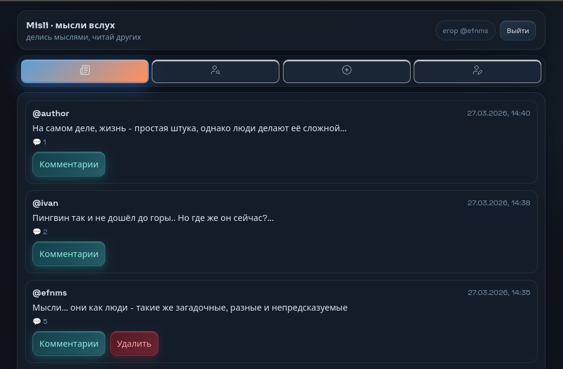

FAT-manager
Написать парсер для файловых систем Fat16 и Fat32. Оформить в виде интерфейса по аналогии с известным Far Manager - двусторонний файловый интерфейс, где слева локальное файловое хранилище, а справа - файловая система fat16 или fat32.

Что сделано
Логика написана на Go с использованием генерации кода с помощью protobuf, и с использованием gRPC для межсервисного взаимодействия. Веб-интерфейс написан на html. В проекте использовались два api: для телеграм-бота и для общения с веб-интерфейсом. Хранение данных реализовано с помощью СУБД PostgreSQL, что помогло отработать на практике пользование SQL-запросами, логикой баз данных и, например, миграциями (в процессе настройки и тестирования). Сама база данных запускалась с использованием docker-контейнера.
Написаны скрипты на сервере для более удобной работы с бэкэндом проекта (запуск всего приложения, запуск элементов по отдельности, запуск докер-контейнера с базой данных PostgreSQL и тд.)
Сложности
Сложность была в тот момент, когда нужно было прописать api для работы с запросами с веб-интерфейса (сайта). Также сложность была когда нужно было запустить бэкэнд сервиса на удалённом сервере - проблема была в том, что без vpn запросы к веб-интерфейсу работали очень медленно или совсем не работали. Решением стал выбор: либо использовать всё-таки vpn, либо покупать домен и связывать через него точку входа и сервер. В актуальном состоянии решено, что, так как это всего лишь модель, которая создавалась ради того, чтобы протестировать новые знания на практике, то логично сейчас не мучаться этой проблемой и оставить в таком состоянии (работа с vpn).
Ссылки
Репозиторий с конфигами (предоставляется лично по просьбе, тк по правилам курса распространение этого репозитория запрещено) -